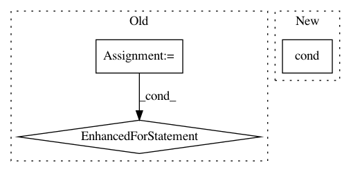

d8590f94ae7afaec4a6228c93d4c688d57965f38,nilearn/_utils/testing.py,,generate_group_sparse_gaussian_graphs,#Any#Any#Any#Any#Any#Any#,490
Before Change
n_samples = random_state.randint(min_n_samples, high=max_n_samples,
size=len(precisions))
for n, prec in zip(n_samples, precisions):
signals.append(random_state.multivariate_normal(
mean, -scipy.linalg.inv(prec), (n,)))
return signals, precisions, topology
After Change
raise ValueError("Failed generating a positive definite precision "
"matrix. Decreasing n_features can help solving "
"this problem.")
print(np.linalg.cond(prec))
precisions.append(prec)
// Returns the topology matrix of precision matrices.
In pattern: SUPERPATTERN
Frequency: 3
Non-data size: 3
Instances
Project Name: nilearn/nilearn
Commit Name: d8590f94ae7afaec4a6228c93d4c688d57965f38
Time: 2013-09-02
Author: philippe.gervais@inria.fr
File Name: nilearn/_utils/testing.py
Class Name:
Method Name: generate_group_sparse_gaussian_graphs
Project Name: reinforceio/tensorforce
Commit Name: da73514fe9af58f35dc62a5c0c91ab60fd55f134
Time: 2019-01-18
Author: alexkuhnle@t-online.de
File Name: tensorforce/core/models/model.py
Class Name: Model
Method Name: api_act
Project Name: reinforceio/tensorforce
Commit Name: 6c35b7992eb57e530665c243eea426044e0940ef
Time: 2020-01-05
Author: alexkuhnle@t-online.de
File Name: tensorforce/core/models/model.py
Class Name: Model
Method Name: api_act